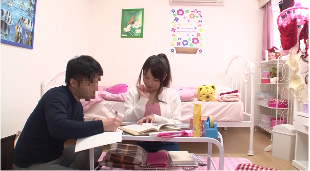

Chuyện Thời Yahoo – Truyện Sex Ngắn
Thông Tin Truyện
Tên Truyện: Chuyện Thời Yahoo – Truyện Sex Ngắn
Tác Giả : Đang cập nhật
Danh Mục: Truyện Sex Người Lớn
Thể Loại: truyện sex ngày xưa, truyện sex yahoo, truyện thời xưa
Hắn nắm chặt hai bàn tay đang bị trói lại, nghiến răng kềm giữ không hét lên trong cái khoái cảm thú tính đang từng lúc, từng lúc hạ gục hắn…
Quỳnh đẩy người một cú thật mạnh… Hắn giật cả người lên… Cái ngứa ngái đổ dồn tới, rồi một cảm giác sung sướng quặn lên… Hắn cảm thấy mọi cảm giác của hắn đột ngột phóng trào ra như điên dại. Quỳnh mở miệng rên lên thỏa mãn, âm hộ cô ta dồn dập đón nhận những cảm giác của hắn đang phóng ra, từng đợt, từng đợt… Hắn giật mạnh cả người theo từng nhịp nhún người của Quỳnh. Cơn mưa gió nóng chảy đổ xuống từng đợt những hạt mưa cuối cùng rồi dần dần bớt hạt. Như một khúc gỗ cháy đỏ rồi tàn dần trong chiếc lò sưởi vẫn còn cháy rực, hắn ngửa mặt ra, thở dốc… Quỳnh cũng ngưng nhún nhảy nữa, cô ta ôm sát lấy người hắn rồi cả hai cùng giữ yên như để tận hưởng cảm giác mệt mỏi sau một trận mây mưa. Miệng Quỳnh thở phì phà vào tai hắn nghe phù phù… Hắn nghe thấy giọng cười mệt mỏi của Quỳnh…

Phần 1: Nice Lotus 1812
Lẽ ra hôm nay hắn phải học đến 10 giờ, bài báo cáo còn nguyên trên máy chưa xong được phân nữa, nhưng có cái gì đó thôi thúc hắn phải thoát ra khỏi chương trình, ra ngoài desktop và rà chuột vào một cái icon quen thuộc: Yahoo!Messenger. Hôm nay là thứ bảy, hi vọng là….Chiếc đồng hồ cát hiện ra, hắn nhịp chân chờ đợi. Cửa sổ Yahoo! xuất hiện, hắn thở ra một hơi thất vọng, cô ấy không online rồi. Đã hai ngày nay không gặp, hắn nhớ muốn phát điên lên. Hôm nay là thứ bảy mà, cô ấy chắc chắn là đang ở nhà…Cô ấy đang làm gì nhỉ?Trong Buddy list không có cái nick nào phát sáng, kể cả cái nick thân thương: nice_lotus1812. Hắn chẳng còn thiết làm gì nữa. Hắn vuốt tóc lên ngẫm nghĩ vu vơ, không biết từ khi nào hắn đã ghiền cái thú chat trên mạng Yahoo! , à, đó là lúc hắn quen với “nice_lotus1812” ,hắn không thể quên được cái cảm giác ấm áp, gần gũi khi chat với cô. Không thấy mặt, không nghe giọng nói, nhưng trong trí óc hắn đã hình thành nên một thần tượng lung linh, một thiên thần dịu dàng đang cùng hắn trò chuyện. Cô đang học ở Bưu Chính Viễn Thông, cái tuổi 18 giỏi giang, ngây thơ ấy cũng đủ làm hắn điên đảo. Hắn nhìn lại mình, cũng 18 tuổi, đang học ở trừơng đào tạo Chuyên Viên Quốc Tế, xem ra cũng không tệ, nhưng hắn cảm thấy mình thật kém cỏi so với nàng, hắn cũng không biết tại sao, có lẽ do nàng nói chuyện quá dễ thương chăng? Hắn thở dài nhấp vào nút close. Biểu tượng Yahoo! nho nhỏ vẫn còn dưới thanh taskbar, hắn không buồn tắt, cứ để cho nó như vậy. Bài báo cáo này thì sao đây? Hắn đeo khiếng vào, nheo mắt nhìn lên màn hình, chụp cái phone lên tai. Bỗng tiếng chuông quen thuộc của Yahoo! vang lên “Cooong”, một cửa sổ nhỏ hiện ra giữa desktop cùng một thông điệp nhỏ:
nice_lotus1812: Viator, chúc một ngày tốt lành ^_^…
Hắn mừng rơn lên, tay gõ nhanh vào bàn phím
Viatorvn: Chào nice_lotus, mình khoẻ lắm Còn bạn?
nice_lotus1812: Hôm trước cài lại Unikey rồi, Cảm ơn đã gửi cho mình.
Viatorvn: Không có gì Bạn vui là được rồi.
nice_lotus1812: Hôm nay trường bạn cũng nghĩ à?
Viatorvn: Ừm, mình học buổi chiều mà
nice_lotus1812: À, mình quên ^_^
Viatorvn: Ủa, sao mình không thấy nick của bạn sáng lên vậy?
nice_lotus1812: À, mình đang ở invisible mode
Viatorvn: Hèn chi
nice_lotus1812: Bạn biết tại sao không?
Viatorvn: không biết, bạn nói đi
nice_lotus1812: bởi vì mình chỉ muốn chat với một mình bạn thôi
Hắn tươi tỉnh hẳn lên, ” cô ấy chỉ muốn chat với mình…thật sao?”, hắn cũng vậy, hắn không thích chat với bất cứ ai vào lúc này nữa, hắn chỉ thích nice_lotus1812.Và mỗi lúc như vậy, hắn lại lúng túng, không biết nên nói gì, hắn ngần ngừ đặt tay lên bàn phím. Nhưng một thông điệp khác đã đến
nice_lotus1812: Viator
Viatorvn: mình đây
nice_lotus1812: mình nhờ bạn một chuyện được không?
Viatorvn: mọi thứ bạn yêu cầu, nice_lotus
nice_lotus1812: mình đang tìm tài liệu về mạng viễn thông
Viatorvn:mình có thể giúp gì không?
nice_lotus1812: bạn có biết những trang web về mạng viễn thông chứ?
Viatorvn: chắc chắn rồi, mình là Viator mà
nice_lotus1812: chứng minh đi nào
Hắn chỉ cho nice_lotus vài trang web tìm kếm. Sau đó im lặng đi vài giây, hắn đánh bạo gõ tiếp
Viatorvn: mình rất muốn gặp bạn, nice_lotus
Bên kia cũng im lặng đi vài giây, hắn hồi hộp chờ.
nice_lotus1812: thật à ?
Viatorvn: mình nói thật đó, nice_lotus
Viatorvn: mình có thể không?
nice_lotus1812: có thể
Viatorvn: mình muốn gặp bạn lắm
nice_lotus1812: 4 giờ chiều nay , tại thư viện thành phố, mình sẽ ở đó
Viatorvn: làm sao mình nhận ra bạn?
nice_lotus1812: mình sẽ ở kho sách Mạng viễn thông
Viatorvn: nhưng nice_lotus à, mình chưa biết mặt bạn
nice_lotus1812: mình cũng vậy nhưng nếu có duyên thì bạn sẽ tìm ra mình
nice_lotus1812: thôi, mình phải đi rồi, bye nhe, Viator
Viatorvn: nice_lotus, mình muốn gặp bạn lắm
nice_lotus1812: bạn sẽ gặp được mình
Viatorvn: mình rất muốn , nice_lotus
Hắn cố gắng gõ thật nhanh, nhanh đủ để hắn có thể nói hết những gì đã và đang hiện ra trong óc hắn, nhưng…
nice_lotus1812 has logged out at 9:31 AM(2/1/2004)
Hắn nặng nề click chuột vào nút closes. Bài báo cáo này xem như đã là ngày mai rồi. Hắn tắt máy, nhảy phóc lên giường với hàng lô thứ trong đầu…rồi hắn ngủ lúc nào không hay.
_o0o_
Hắn bật dậy, nhà vắng tanh, bố mẹ hắn đi làm chưa về. Hắn nhìn đồng hồ…” Chết rồi!!!!”…Hắn bật dậy chạy như ma đuổi, đã 2 giờ 45 chiều, và hắn không thể nào lỡ cái hẹn lúc 3 giờ, hắn không được quyền lỡ. Trời hôm nay không nắng, thường thì giờ này nắng lắm chứ? Hắn vừa rửa mặt vừa nhìn ra ngoài, mây đen,…gió thổi hơi mạnh…không biết mưa không nhỉ? Mặc kệ chuyện thời tiết, hắn tất tả chạy đi kiếm bộ đồ treo trên móc. Hắn nhìn lại mình lần nữa trước gương…rồi hắn bật cười thầm…” Cô ấy sẽ nghĩ sao khi gặp một thằng ra đường mà quên gài dây kéo nhỉ?”. Hắn cúi xuống kéo dây quần lên, thực ra thỉnh thoảng hắn cũng hay quên, nhưng chưa khi nào bị con gái nó “thấy” cả. Sau khi cài cửa lại chắc chắn, hắn đạp máy chiếc xe 78 cà tàn, xe không nổ, hắn bực bội đạp hết sức. Lẽ ra hắn phải đi một chiếc xe khá hơn, xịn hơn mới xứng đáng đi gặp một cô gái …nhưng…xe đâu mà đi? Hắn chỉ có “nhất y nhất quởn” chiếc này thôi. Xe nổ máy, hắn ngước mặt lên trời để hít chút gió, chà, mây đen hơi nhiều, nhưng chắc gì sẽ mưa? Hắn phóng xe luôn ra đường chạy như bay về hướng đường Hai Bà Trưng. Chưa tới giờ tan ca, xe còn thưa thớt, hắn tha hồ phóng đi. Hổn hển gửi xe vào bãi, hắn đi như bay vào trong Thư Viện, vừa đi vừa nhìn đồng hồ…3 giờ 10… hi vọng còn kịp. Hắn gật đầu chào viên quản thư, hắn quen bà ta vì thỉnh thoảng hắn cũng hay ghé vào đây để mượn sách. Các kho sách lúc nào cũng đông khách, chủ yếu là bọn sinh viên đi coi “chùa”…hắn ngơ ngác tìm kho Mạng Viễn Thông. Đây rồi, Bưu Chính Viễn Thông, nó đây. Hắn hồi hộp bước từng bước vào, ở đây vắng hơn những kho kia, chỉ có vài sinh viên đang tra cứu sách. Hắn nhíu mày: “Toàn là ‘ đực rựa’ …Cô ấy đâu nhỉ?”… Và… hắn thấy một cô gái đang đứng đọc sách gần trong góc phòng. Cô ta đeo kính, khuôn mặt trầm tư chăm chú vào quyển sách như không còn quan tâm gì đến những thứ xung quanh. Cô ấy có nước da trắng trẻo, nổi bật lên trong cái áo thun bó sát màu đen tuyền. Chiếc quần jeans cũng màu đen gọn nhẹ ,thẳng thớm chạy dọc theo những đường cong cân đối. Thỉnh thoảng cô lật vài trang để tìm thứ mình cần, mắt chăm chú theo dõi từng hàng chữ.” Cô ta đẹp thật…Chắc đúng rồi…”, hắn nghĩ rồi đi chậm rãi đến. Không biết phải bắt đầu từ đâu, hắn khẽ tằng hắng…Cô ấy ngước lên. Ánh mắt ngây thơ, xinh đẹp sau cặp kiếng nhìn thẳng vào mặt hắn, rồi lướt nhanh trở lại quyển sách. Hắn giả bộ đi lại gần tìm vài quyển trên kệ. Cô ấy vẫn tiếp tục với quyển sách, không để ý gì đến hắn. “Làm gì nữa đây?”, hắn suy nghĩ.
“Chào bạn…”_Hắn nói nho nhỏ. Cô ấy ngước lên, khẽ mỉm cười gật đầu. Hắn khẽ cười lại….”…bạn đang học ở đâu?”
“Mình ở Bưu Chính Viễn Thông”_Cô đáp lại bằng giọng nói nhẹ nhàng, vừa đủ nghe. Hắn cảm thấy tự tin hơn.
“Vậy à…Bạn có đang chờ ai không?”
Cô ấy dừng đọc, hơi ngước lên rồi khẽ chớp mắt…
“Ừm…mình đang chờ một người…”…Rồi như vừa nghĩ ra điều gì đó. cô nói tiếp,”…có gì không bạn?”
“À…không…nhưng mà nè….bạn có thường chat trong Yahoo không?”
“Thỉnh thoảng…”, cô đáp lại bằng giọng nữa vời
“Người bạn đang chờ chừng nào sẽ đến?”
“Không biết nữa…”
Hắn càng hi vọng hơn, bằng một giọng nói chen chút đùa cợt, hắn thì thầm…
“Một anh chàng phải không?”
Cô dừng đọc, nhìn hắn ….Hắn nhìn lại… Hắn hồi hộp chờ… Cô ấy chắc là biết hắn là ai rồi
“Không phải.”
Hắn giật mình…”Không phài à?”….
Cô ấy hơi ngạc nhiên
“Sao vậy? Có vấn đề gì sao?”
Niềm hi vọng của hắn tắt ngấm… Hắn đã đến trễ, và nàng đã về vì không thấy hắn… Hắn sẽ phải ân hận vì điều này… hắn cảm thấy có lỗi với nàng.
“Bạn làm sao vậy?”_Cô gái nhìn hắn tò mò,”… mình nói gì sai hay sao?”
“Không…không có gì…”, hắn lắc đầu, “..mình nhầm bạn với một người khác…Xin lỗi, chào bạn..”
“Ừm..không sao..Chào bạn…”_Cô gái tiếp tục hướng ánh mắt xinh đẹp váo quyển sách. Hắn thất thểu đi ra, lòng nặng trình trịch, … Hắn giận mình, lẽ ra hắn phải nhớ dậy cho sớm hơn. Có lẽ nàng giận hắn lắm, còn điều gì tệ hơn nữa?… Không biết nàng là ra sao nhỉ?… Giá như cô gái lúc nãy là nàng thì hắn còn gì hạnh phúc hơn?
“Giờ này mới tới, trễ vậy?”_Giọng nói của cô gái hắn vừa mới nói chuyện vang lên…Hắn quay đầu lại…Cô ta đang nhìn ra hướng cửa ra vào…Hắn ngoái nhìn theo…Và…hắn thấy một cô gái nữa đang bước vào…Hắn hơi nghệch người ra… Cô gái ấy … Khuôn mặt tươi tắn, đều đặn đến tuyệt mĩ, không một khuyết điểm. Mái tóc óng ả, đẹp một cách tự nhiên, bồng bềnh ngang vai. Chiếc áo sơ_mi mỏng ngây thơ màu trắng thật là hợp với dáng người thon thả, mảnh mai cùng chiếc quần jeans cũng màu trắng. Làn da trắng hồng, nõn nà nhìn không chán mắt. “Sao lại có người đẹp đến vậy nhỉ?”….Hắn ngơ ngác nhìn , cô gái lướt nhẹ ánh mắt qua khuôn mặt hắn… một hương thơm dịu dàng của con gái lướt ngang qua mũi hắn… Hắn căng mũi hít lấy rồi hà ra khoan khoái… Đúng là người đẹp thì mùi hương cũng đẹp. Cô đi băng qua hắn rồi vẫy tay …
“Xin lỗi…xe buýt bị kẹt… Sắp Tết rồi mà..”_Cô ta vừa bước nhanh vừa nói,”…Mệt ghê…”
“Sao không lấy xe đạp mà đi?…Có tiện hơn không?”
Hai cô gái nói chuyện thỏ thẻ, hắn đứng lại nhìn cho kĩ hơn…Đúng là tuyệt mĩ… Hắn chưa bao giờ gặp cô gái nào đẹp như vậy… Rồi hắn cười thầm…hắn đang tìm ai cơ chứ? Hắn đâu phải là một tên mê gái …
“Nãy giờ cậu có thấy anh chàng nào đến kho sách này không?”_Cô gái nói
“Nhiều lắm… Cậu tả thử coi…”_Bạn cô hỏi lại
“Mình không biết…”
“Không biết luôn hả? Chuyện lạ đó nghen…”
Hắn giật mình quay lại, đúng lúc nàng quay nhìn quanh… hắn cảm thấy có cái gì đó thôi thúc hắn… Hắn từ từ bước đến… nàng đang nhìn hắn bằng ánh mắt ngây thơ… Hắn lấy hết can đảm, hít một hơi dài hỏi…
“Nice_lotus?”
Nàng im lặng… cô bạn của nàng nghiêng đầu nhìn hắn. Thời gian nặng nề qua từng giây.. tim hắn đập liên hồi…
“Viator?”_Nàng hỏi lại… Và đúng là tim hắn đã ngừng đập đúng một nhịp… rồi một nhịp đập mạnh hết cỡ bơm máu lên nóng bừng mặt… Hắn cố phát ra âm thanh trong cổ họng…
“Ừm…”
Nàng mỉm cười lộ hai đồng tiền quyến rũ.
“Chào Viator… Chúc một ngày tốt lành… ”
_o0o_
Nàng tên là Ly, nàng đến thư viện để trả quyển sách cho cô bạn cùng lớp. Đó là cô gái mà hắn đã gặp trước khi thấy nàng. Hắn vừa trò chuyện với nàng vừa cố gắng điềm tỉnh lại, hắn cứ tưởng mình còn trong giấc mơ. Cô bạn thường chat với hắn mỗi thứ bảy, người mà hắn luôn mong chờ gặp mặt, bây giờ hắn đã gặp… Và cô ấy quá xinh đẹp, quá đẹp cho hắn, hắn càng ngưỡng mộ cô hơn, như một sự tôn sùng. Cô vừa trò chuyện vừa cười tự nhiên, nét đẹp của cô ngây thơ, hiền dịu như một nàng tiên. Nhiều lúc, hắn chỉ nhìn nàng mà không biết nói gì, hắn đã bị nàng thôi miên, hắn gần như chẳng còn biết trời trăng gì nữa. Quán kem yên tĩnh, chỉ có vài người khách nên hai người chỉ nói chuyện với nhau nho nhỏ.
“Vậy là nhà bạn cũng ở gần đây?”_Nàng hỏi
“Ờ…cũng không hẳn… Gần hơn nhà một vài ngưòi..”
Nàng cười, và mỗi lần như vậy hắn lại ngây dại ra… Bây giờ hắn mới nhìn nàng thật kĩ, thật gần. Khuôn mặt nàng quá hoàn mĩ, không hề có một tí trang điểm nào mà vẫn rạng rỡ. Hắn thỉnh thoảng nhìn thoáng qua người nàng. Làn da trắng nõn lẫn vào màu áo sơ_mi trắng, bồng bềnh như mây. Và… hắn không thể kềm chế con mắt hắn nhìn lướt qua cơ thể nàng. Bộ ngực cân đối của nàng thật đúng với những gì đẹp nhất của một người con gái, chiếc áo lót ngây thơ, e thẹn trong bộ áo sơ_mi thật là lãng mạn. Chiếc quần jeans trắng của nàng ôm trọn đôi chân dài, trắng trẻo, hắn nhìn rõ chiếc quần lót màu trắng, ôm sát theo bờ mông tròn đầy, săn chắc. Điều bí mật của nàng đang ần giấu đâu đó bên dưới lớp vải kia.Ước gì…. Hắn lắc khẽ đầu… “Mình đang nghĩ cái gì thế này?”… Nàng ngạc nhiên… “Bạn làm sao vậy?”…..
“Không sao…Không sao… Bạn thấy kem ở đây thế nào?”
“Ngon lắm!…. Mình chưa bao giờ ăn kem ở đây… “_Nàng lại cười, rồi nàng nhìn vào đồng hồ.”Có lẽ mình phải về thôi, kẻo hết chuyến xe buýt.”
“Mình sẽ đưa bạn về.”_Hắn kéo ghế đứng dậy”…mình có thể không?”
Nàng cười thật tươi gật đầu….”Ừm..có thể…”
Hắn mừng rơn, chạy trả tiền rồi cuống cuồng đạp máy xe… Hắn chỉ tay vào chiếc yên sau… Nàng gọn gàng ngồi lên. Xe nổ máy chạy băng băng trên đường, nàng chỉ hướng cho hắn chở đi, nhưng hắn thì không hẳn là nghe rõ… hắn đang mê li với hương thơm trên người nàng tỏa ra sau lưng. Hắn tưởng mình như đang chở cà một vừơn hoa thơm ngát phía sau. Đường đi ngày sắp Tết xe cộ thật đông đúc, dãy xe dài thỉnh thoảng lại dừng gấp lại, rồi dãn ra… Hắn đột ngột dừng lại để né một chiếc xe tải ép vào… Nàng bị mất thăng bằng nên ngã người ôm cứng lưng hắn. Vá chỉ trong có vài giây, gai óc khắp người hắn nổi lên… Lưng hắn nóng lên hôi hổi bởi cặp ngực tuyệt trần của nàng tì lên, hắn như nghe được cả nhịp trái tim nàng đang đập bên trong lồng ngực, xuyên qua lớp áo lót, đó là một trái tim đang thổn thức của nàng. Hắn nín thở giữ yên đựơc một phút, rồi phải rồ ga đi tiếp để giữ phép lịch sự. Nàng khẽ buông người hắn ra… Hắn không biết nàng đang nghĩ gì… Hắn còn không biết là hắn đang nghĩ gì nữa…Bỗng một giọt nước rơi nhẹ lên má hắn, rồi nhiều giọt nữa rơi xuống, càng lúc càng nhanh. Trời mưa à?… Hắn không có đem áo mưa… Đúng là xúi quẩy, lúc chiều hắn đi vội quá… Mưa rơi xuống nhanh hơn, áo hắn đã ướt đẫm nước mưa…. Sực nhớ là nàng cũng không có áo mưa, hắn đề nghị tìm chỗ trú, nhưng nàng nói là nhà nàng gần, chỉ cần cố đi vài phút nữa. Hắn rồ ga cố chạy cho nhanh, nhưng đường phố càng khó chạy hơn trong trời mưa. Hắn quẹo vào con hẻm nàng vừa chỉ, đoạn đường này sạch sẽ hơn nhưng mưa cũng đã rất lớn, cả hai cúi đầu xuống để tránh những giọt nứơc to rơi vào mắt. Đến nhà nàng, hắn tấp xe vào thềm để nàng đi vào… Hắn vuốt mặt rồi quay nhìn nàng… Hắn lại ngẩng người ra… Lúc này, nàng như một tiên nữ vừa tắm xong, chiếc áo sơ_mi mỏng bị ướt hết, bện dính lên chiếc áo lót mỏng manh, lộ ra hết những đường cong cân đối của hai bầu ngực nàng. Cả chiếc quần jeans trắng cũng ướt sũng, nước thấm qua cả lớp vài jeans dày để hắn thấy rõ chiếc quần lót nhỏ của nàng, hắn rùng mình, nữa vì nước mưa lạnh, nữa vì… hắn đang lóa mắt vì nét đẹp của cơ thể nàng. Nàng nhìn hắn chăm chú.
“Bạn vào nhà đi..”
“Thôi…mình về đây…”_Hắn gượng cười_”…không tiện đâu, ba mẹ bạn sẽ la mình đó…”
“Ba mẹ mình tới sáng chủ nhật mới về… mình ở nhà có một mình thôi.Bạn cứ vào đi…không sao đâu.”
Nàng mở cửa, hắn ngơ ngác. Cô ấy ở nhà một mình à?… Một cô gái thật đặc biệt. Dựng xe vào nhà, hắn chùi chân lên tấm thảm sạch rồi phủi nhẹ những giọt nước trên áo. Nàng bật đèn rồi quay lại vuốt tóc nhìn hắn. Nàng cười.
“Bạn chờ một chút, mình tìm cái máy sấy .”
Hắn đứng nhìn quanh, không dám ngồi vì người hắn còn ướt. Hắn nhìn theo nàng, dáng nàng đi nhẹ nhàng trên nền gạch bông như những cô người mẫu, cặp mông nàng hơi nhẹ tưng theo từng bước chân, hắn thấy toàn bộ chiếc quần lót của nàng xuyên qua lớp quần jeans, hắn bỗng hơi khó chịu, dương vật của hắn bắt đầu cương lên. Hắn cố kềm lại…
“Đây…bạn hong cho khô đi… “_Nàng đưa hắn chiếc máy sấy màu trắng, hắn cầm lấy rồi cảm ơn. Nàng đi vào trong, còn lại một mình giữa phòng khách, hắn nghĩ vu vơ… Hắn nhớ đến cái cảm gíác ấm áp của bộ ngực nàng, rồi chiếc áo lót mỏng manh, chiếc quần lót nhỏ nhắn của nàng làm hắn muốn điên lên… Căn nhà yên ắng, chỉ có hắn và một cô gái xinh đep, không có ai khác…Cái không khí trầm lặng này làm hắn không chịu được. Hắn vừa sấy vừa đi dần vào bên phòng khác… Bên ngoài, mưa càng to hơn, sấm chớp liên hồi, mưa rơi xuống ngoài thềm nghe lộp độp. Hắn lần mò đi vào trong. Chùm tóc ướt che vào mắt, hắn hất nhẹ đầu ra phía sau… Và rồi hắn lặng người nhìn trân trân… Sau lưng hắn, phía dãy phòng , cánh cửa hơi hé ra lộ chút áng sáng màu vàng từ phòng nàng. Hắn nhích thêm một bước nữa, rồi trân người dừng lại… Nàng đang đứng trong phòng, tay đang cầm chiếc lược nhỏ chảy tóc trước gương. Nàng vẫn mặc bộ quần áo ướt, trắng muốt như tuyết. Nàng đặt chiếc lược xuống bàn, hơi cúi đầu xuống, và nàng từ từ, chầm chậm mở dần từng nút áo. Dần dần, chiếc cúc áo cuối cùng của nàng được bàn tay nhỏ nhắn mở ra… Rồi nàng cởi chiếc áo sơ_mi ướt, tụt dần xuống lưng… Làn da trắng hồng của nàng phơi ra, đẹp như màu mận trắng, nõn nà, tươi mát… Hắn cảm thấy khó thở, tay cố cầm chắc cái máy sấy. Nàng bắt đầu đưa tay ra sau lưng, gỡ lên miếng gài của chiếc áo lót… Và……. nàng gỡ ra…. Hắn kềm mình không kêu lên… Chiếc áo lót nhỏ nhắn rơi xuống, và… phản chiếu qua gương, dáng người của nàng giống hệt như một bức tranh nghệ thuật của một học sĩ cực kì có hoa tay. Mắt hắn dừng lại… hắn nhìn thấy rõ đôi vú trắng trẻo của nàng, hai gò bồng đảo đều đặn màu hồng nhạt dễ thương, bộ ngực trinh nguyên của con gái 18 thật là đẹp. Hắn mơ màng nhìn… và quên mất rằng mình đang đứng đối diện với tấm gương… Nàng bất chợt quay lại, tay cầm chiếc áo che nhanh lên ngực. Hắn giật mình đánh rơi chiếc máy sấy xuống đất… Nàng kinh ngạc nhìn hắn, và hắn thì đang lúng túng nhặt chiếc máy sấy lên… Đầu hắn đã nóng bừng lên, hắn không biết làm gì nữa… Hắn đã nhìn trộm nàng, và hắn biết chắc rằng nàng sẽ rất giận… Một ý nghĩ thoáng qua trong đầu hắn: nàng sẽ chẳng bao giờ làm bạn với hắn nữa… Hắn rùng mình, hắn sẽ sống ra sao nếu mất một người bạn như nàng? Hắn không thể chịu nổi khi nghĩ đến câu nói giận dữ mà nàng sắp nói, hắn đã có một người bạn quá tuyệt mĩ, nhưng hắn đã tự đánh mất đi… Hắn thở không ra hơi nữa, khó thở như đang trong lò lửa…
“Ly…mình…mình xin lỗi…”_Hắn cố thốt ra vài tiếng.”…mình…mình không cố ý…”
Nàng im lặng, tay vẫn giữ chắc chiếc áo che ngang ngực. Hắn muốn bỏ đi cho nàng đỡ xấu hổ nhưng hắn không thể rời mắt khỏi bản tay nhỏ nhắn của nàng đang che trước ngực bằng chiếc ào sơ_mi mỏng manh. Hắn ấp úng…..
“Mình xin lỗi…mình thật sự không cố ý….”
“Không sao…”_Nàng nói bằng giọng dịu dàng, nàng hơi nhích vào trong. Người hắn nóng ran lên… Giọng nói của nàng quá dễ thương, hắn không thể chịu đựng nổi nữa. Tay cầm chiếc máy sấy đặt lên chiếc bàn gần chỗ đứng của nàng, hắn nhìn nàng với vẻ hối hận.Hắn không hiểu nổi những gì hắn đang làm, … nhưng hắn cảm thấy mình là một thằng vô duyên, hành động của hắn thật là lố bịch. Nhưng hắn không hiểu vì sao hắn càng lúc càng tiến lại gần nàng hơn, và hắn dần cảm thấy rõ ràng hơn cái mùi hương thơm mát tỏa ra từ người nàng. Hắn thấy nàng vẫn nhìn hắn, đôi mắt nàng thật khó hiểu, hắn không biết nàng đang nghĩ gì. Nàng đang nghĩ gì lúc này? Hắn đoán rằng nàng đang hối hận vì lỡ quen với một tên vô duyên như hắn. Nàng hơi lùi vào trong. Hắn vừa nhích dần vừa suy nghĩ, vô tình quơ tay trúng chiếc máy sấy làm nó văng xuống đất. Hắn giật thót người cúi xuống nhặt lên, nàng cũng giật mình cúi xuống. Chiếc áo sơ_mi ướt rơi xuống đất, hắn từ từ ngẩng đầu lên. Và … hắn quên hẳn đi chiếc máy sấy… quên hẳn đi những việc xung quanh … thậm chí quên luôn hắn là ai … hắn chỉ biết cái tạo vật đẹp nhất trần đời mà hắn chưa từng được thấy, bây giờ đang hiện hữu trước mặt hắn. Nàng đã đánh rơi chiếc áo sơ_mi vì cúi xuống nhặt chiếc máy sấy, nàng cũng lặng người quên nhặt chiếc áo lên, mặt nàng chỉ đỏ như trái hồng đào. Hắn không còn biết gì nữa… hằn từ từ cúi sát hơn đến gần mặt nàng, nàng đang trân trân nhìn hắn, không có phản ứng gì … Hắn nhìn càng lúc càng gần hơn vào đôi mắt nàng, mắt nàng trong veo như thuỷ tinh, đang mở to ngây thơ như đôi mắt nai. Và hắn cảm thấy đôi môi hắn chạm nhẹ lên môi nàng … hắn cảm thấy như điện giật … Nàng cũng hơi hoảng nên hơi lùi ra, nhưng rồi hắn cũng dần dần tiến lại, một lần nữa, hằn được cái cảm giác mềm mại, ấm áp của đôi môi nàng. Hắn mê li nhắm nghiền mắt, choàng tay ôm lấy nàng … hắn thấy lưỡi nàng đang ngọ nguậy … hắn dùng lưỡi hằn chạm nhẹ lên đầu lưỡi nàng. Cả hai rùng mình nhè nhẹ, nàng nhẹ nhàng ngã người dần vào lòng hắn. Cái cảm giác này hắn chưa từng được hưởng trước đây … Nhưng rõ ràng là hắn không biết rằng hắn đang làm gì cả, hắn ôm nàng lên, đi đến cái giường trải nệm bông trắng. Hắn đặt nàng xuống giường, người nàng cũng nóng ran lên, mềm mại chuyển động dưới cơ thể hắn. Dương vật hắn đã căng cứng, độn lên dưới lớp quần jeans, nàng hình như đã cảm thấy cái đó của hắn, mặt nàng đỏ ửng lên, tay hơi đẩy nhẹ lên người hắn một cách yếu ớt. Hắn đã cảm thấy hai bầu vú mềm, nóng ran của nàng ép chặt dưới ngực hắn. Cái cảm giác lành lạnh của trời mưa không còn nữa, chỉ còn cái cảm giác nóng bừng đầy hứng khởi mà hắn và nàng đều đang cảm thấy. Hắn cúi đầu hôn xuống cổ nàng … hắn tận hưởng cái mùi hương quyến rũ đang tỏa ra ngào ngạt từ người nàng. Còn nàng thì chỉ nhắm mắt mơ màng, khẽ chuyển động theo từng nụ hôn của hắn. Hắn vất cái áo ướt trên người hắn xuống đất, rồi rùng mình cảm nhận sự cọ xát mềm mại với da thịt nàng. Hắn vồn vã thụt người xuống, ngậm chặt lấy núm vú nàng làm nàng hơi giật thót mình. Núm vú nàng ấm áp, thơm mát nẳm gọn trong miệng hắn, hắn nút mạnh, dùng lưỡi rà qua rà lại rồi còn mút chặt hơn nữa như không muốn núm vú nàng vuột ra khỏi miệng hắn. Nàng lần đầu tiên của đời con gái phải chịu sự kích thích như thế này, nàng rên lên, tay vò đầu hắn đang vùi vào ngực nàng. Nàng lim dim cảm nhận những hơi thở nóng hổi của hắn phà lên ngực, rồi cái miệng hấp tấp của hắn ngậm lấy hai núm vú nàng một cách vồn vã như một đứa trẻ. Hai bàn tay hắn vuốt nhè nhẹ lên chiếc quần jeans trắng còn đang ươn ướt của nàng, hắn kéo sợi dây kéo quần của nàng xuống, nàng giật mình đưa tay cản lại nhưng hắn đã lòn bàn tay vào rồi vuốt nhè nhẹ trên chiếc quần lót của nàng. Tay hắn chạm vào âm hộ làm nàng giật thót lên, hắn cũng run cả tay lên vì hơi ấm bên dưới lớp quần nàng. Hắn cảm thấy âm hộ nàng đã hơi nhô lên, nàng đã có cảm giác rồi …
Hắn nhả núm vú nàng ra rồi lại liếm hết cả hai bầu vú nàng, hắn liếm vòng quanh bộ ngực căng đầy sức sống của nàng, rồi hắn lại ngậm hai núm vú nàng, nút thật mạnh. Nàng rên lên khe khẽ, hai bầu vú nàng bóng nhẫy, phập phồng lên xuống. Bàn tay hắn vẫn lòn vào trong quần lót của nàng, cham nhẹ lên những cọng lông tơ trên âm hộ nàng. Hắn mơ màng vuốt dọc theo âm hộ nàng … nàng khẽ rùng mình, hắn cảm thấy tay mình hơi ươn ướt … rồi hắn cảm thấy âm hộ nàng khẽ co giật, tiết ra một thứ nước âm ấm dính lên tay hắn. Hắn rút bàn tay ra, nàng khẽ mở mắt nhìn hắn …Tay hắn dính ướt chất dịch trong âm hộ nàng tiết ra, và hắn đưa bàn tay lên miệng, nàng giật mình ngăn lại…. “Đừng mà… đừng…”… nhưng hắn đã ngậm lấy hai ngón tay hắn đang dính đầy nước nhớt của nàng, mút rồi nuốt ngon lành. Hắn cảm thấy thứ gì từ người nành cũng thơm cả, và hắn cảm thấy thèm thuồng cơ thể nàng hơn bao giờ hết. Nàng đỏ mặt nhìn bàn tay hắn tiếp tục lòn vào trong quần lót nàng, và nàng cũng im lặng cho hắn cởi chiếc quần jeans trắng xuống rồi vất xuống đất. Bây giờ nàng chỉ mặc mỗi chiếc quần lót màu trắng nhỏ, đang ướt đẫm nước. Hắn hôn xuống đôi chân thon thả của nàng, hắn liếm hai bắp chân trắng hồng, mếm mại của nàng một cách mê say, nàng bị nhột nên hơi vặn người qua lại. Hắn đã liếm đến bắp đùi nàng, hắn khoan khoái nhìn chiếc quần lót dễ thương của nàng trước miệng hắn chỉ vài cm. Hắn ụp mặt hắn lên giữa hai chân nàng nhanh như cắt làm nàng phải ngồi bật dậy. Chưa khi nào nàng có cái cảm giác bi một người nào đó … hôn vào giữa hai đùi … và nàng cảm thấy xấu hổ… Nàng cố đẩy đầu hắn ra khỏi âm hộ nàng nhưng hắn đã kịp lột phăng chiếc quần lót nhỏ nhắn của nàng ra … Hắn chịu để nàng đẩy ra để hắn có thể thấy rõ được bí mật của nàng… Nhưng nàng đã dùng cả hai bàn tay che âm hộ lại, hắn sốt ruột nhìn nàng… “Sao vậy, Ly? … Để mình nhìn thấy bạn đi…”. Nàng đỏ mặt lên như gấc…”Mình … mình … chưa chuẩn bị cho chuyện này…”. Giọng nàng thỏ thẻ sao mà dễ thương quá, hắn đưa tay vuốt nhè nhẹ lên tay nàng rồi vuốt qua hai bên đùi nàng…” Bạn đẹp lắm … Ly à… cho mình xem bạn đi…chỉ một lần này thôi…”. Nàng cúi đầu xuống, e ngại. Hắn dùng cả hai bàn tay vuốt ve cặp đùi nàng, rồi hắn chuyển lên vuốt ve hai bầu vú nóng hổi của nàng… Hắn nhích lại gần hơn, gần đến độ hắn có thể cảm thấy hơi thở dồn dập, nóng ran từ miệng nàng. Nàng nới lỏng dần hai bàn tay, hắn từ từ, chầm chậm tách hai bàn tay nàng ra…. và hắn đã tìm thấy được bí mật của nàng, bí mật của người con gái đẹp nhất mà hắn từng gặp…
E thẹn, ấp úng, nàng dần dần cho hắn thấy âm hộ của nàng… nhỏ bé, thơ ngây, cùng một đám lông tơ dễ thương, thật sạch sẽ, thơm mát, còn hơn là hắn tửơng tượng ra. Âm hộ nàng đang ướt đẫm ,nước vẫn còn đang tiết ra. Hắn cúi đầu xuống, hôn ngay vào giữa âm hộ nàng. Nàng rên lớn hơn, người nàng giật mạnh. Nhưng hắn đã gắn miệng hắn lên âm hộ nàng, mặc cho nàng vùng vẫy, hắn vẫn giữ nguyên cho lưỡi hắn rà theo hiều dọc của cái âm hộ dễ thương. Nàng rên lên thảm thiết, vùng vẫy đẩy đầu hắn ra, nhưng nước nhớt từ trong âm hộ nàng vẫn cứ chảy ra liên tục. Hắn biết , có lẽ nàng đang bị rát lắm, nhưng hắn không tự kiềm mình được, hắn há miệng ngậm trọn cả cái âm hộ nhỏ bé của nàng rồi nút mạnh. Nàng oằn người lên như con tôm, tiếng nàng rên làm hắn càng hứng lên, dương vật hắn căng cứng hơn bao giờ hết. Hắn càng nút mạnh hơn nữa, Nàng không chịu nổi, quẳn quại, nàng lật úp người xuống, nhưng hắn vẫn ngậm chặt lấy âm hộ nàng. Mỗi cú liếm của hắn lên âm hộ là nàng cong người đau đớn… nhưng dần dần nàng cảm thấy sự thỏa mãn, một thứ gì đó lâng lâng, dâng trào lên, ngay từ dưới âm hộ, lên đến ngực rồi lan toả ra toàn cơ thể… Cái cảm giác khoan khoái đến từ mỗi cú liếm của hắn. Nàng vẫn rên la nhưng tiếng rên của nàng không còn là tiếng rên đau đớn nữa … mà bây giờ là tiếng rên của khoái cảm. Hắn tiếp tục mút lấy từng đợt chất nước rỉ ra từ trong âm hộ nàng, rồi nuốt lấy nuốt để. Hắn mút chùn chụt vào âm hộ nàng… tiếng mưa bên ngoài vẫn còn ầm ĩ… nhưng hắn chỉ còn nghe tiếng rên của nàng, tiếng rên như đến từ chốn thần tiên nào đó. Tiếng rên của nàng thật quá dễ thương, thánh thót như tiếng đàn. Hắn nhả âm hộ nàng ra… nàng thở dốc mở mắt nhìn hắn. Âm hộ nàng ướt đẫm, bây giờ đã đỏ ửng lên. Hắn dịu dàng nựng nịu giữa hai khe thịt của nàng,nàng hơi nhúc nhích hông, những ngón tay hắn lách nhẹ vào, chạm nhẹ đến những lớp thịt ấm nóng, đỏ hồng bên trong, nàng rên khe khẽ. Hắn khẽ cười với nàng… và nàng cũng khẽ mỉm cười lại với hắn. Hắn cúi đến gần , hôn lên môi nàng. Một cái hôn thật dài, thật sâu. Nàng choàng tay ôm lấy hắn, cả hai nằm vật xuống giường. Hắn lột phăng chiếc quần jeans của hắn ra, vất xuống đất. Nàng nhìn chiếc quần lót đang độn phồng lên của hắn… và nàng chầm chậm lột xuống. Dương vật hắn như đuợc giả phóng, bung bật ra khỏi chiếc quần rồi nằm thẳng xuống bụng hắn. Nang hơi chùn tay lại nhìn cái dương vật đầu tiên mà nàng thấy trong đời. Rồi nàng nằm đè lên người hắn, đè lên cái dương vật cứng ngắc của hắn, môi nàng ngậm chặt lấy môi hắn. Hai bàn tay hắn vuốt ve cặp mông tròn trịa của nàng, hắn nâng niu cặp mông nàng như hai quả bong bóng dễ bể. Nàng cựa mình nhè nhẹ, nước rỉ ra từ âm hộ nàng chảy xuống ướt cả bụng hắn, hắn khoan khoái hôn xuống cổ nàng.
Hắn cầm cái dương vật đang cứng như cây củi khô từ từ chạm đến âm hộ nàng… Bỗng nàng giật mình đẩy hắn ra….”Sao vậy Ly?…”. Hắn hỏi. Nàng ngượng nghịu cúi đầu xuống, tay hơi che ngang ngực. Nàng thỏ thẻ.” … Mình … chưa … chưa quen … “… Hắn cảm thấy tội ngiệp nàng, cơ thể bé bỏng của nàng chưa bao giờ bị dày vò như thế này. Lẽ ra hắn không nên…. “Mình xin lỗi…”,nàng lại thì thầm. Hắn cười,tay nhẹ nhàng vuốt tóc nàng.”Không sao, mình hiểu mà. Thực ra mình mới có lỗi, nhưng mình không kềm chế được… Bạn quá đẹp, Ly à… Bạn là người bạn mà mình không thể nào thiếu được.”. Nàng cười mơ màng nhìn hắn. “Thật chứ?… “.Nàng hỏi khẽ.”…Bạn có chắc không?”. Hắn gật đầu, tay hắn nắm chặt tay nàng, “Đây là lời nói chân thành nhất dành cho một người bạn quí nhất của mình. Chỉ cần bạn tin mình thôi, Ly, bạn có tin mình không?”. Nàng mỉm cười, mặt nàng đỏ hồng lên.”Tin chứ…Mình luôn tin tưởng Viator…”. Hắn lại vùi đầu lên ngực nàng, để hai bầu vú nóng hổi của nàng cạ lên hai gò má hắn, hắn buộc miệng rên lên sung sướng. Nàng cũng rên khe khẽ. Hắn vẫn còn đang nằm dưới cơ thể nàng, dương vật hắn đã căng hết mức, hắn không thể kềm chế thêm một giây phút nào nữa.
“Ly…Ly à..”. Hắn thì thầm. Nàng mở mắt nhìn hắn…Hắn lại thì thầm.” Bạn cho mình được… được… được… “. Nàng khẽ hỏi lại:” Sao vậy?”. Hắn không phải biết nói gì, hắn không biết dùng lời nào để tả cái cảm giác lúc này, tay hắn vuốt ve vặp đùi nàng một cách trìu mến.”Cho mình..cho mình được..được…”, hắn ấp úng..” cho mình được..được ..yêu bạn nhé..Ly..”. Nàng vuốt tóc hắn, rồi… nàng im lặng, từ từ cầm dương vật của hắn đặt gần âm hộ nàng. Hắn run run hôn lên môi nàng, ….rồi nhẹ nhàng nhích người nhè nhẹ. Đầu dương vật hắn lách vào giữa cái khe nhỏ bé, xinh xinh của nàng. Người nàng run lên, nàng rên khe khẽ khi âm hộ nàng đang dần tách ra… ôm trọn lấy dương vật hắn. Đây là lần đầu hắn làm tình, lần đầu hắn còn điều khiển được dương vật của chính hắn. Thêm một chút nữa… dương vật hắn như đang cháy bỏng bên trong âm hộ nàng. Nó chạm phải cái gì đó… mềm mại, cưng cứng… Nàng nhắm mắt lại, khẽ rướn người lên. Hắn vịn vai nàng, nhích nhẹ lên……..”A..a a.”. Nàng nhắm tịt mắt, răng nàng nghiến chặt lại. hai chân nàng khép nhanh, khẹp chặt cả thân hình hắn bên trên nàng. Và hắn đè xuống……”A..a.a.a…a.a…”. Nàng ưởn cong người lên, miệng nàng há ra, hơi thở nàng phà vào mặt hắn, ấm nóng, thơm mát. Hắn ngậm lấy cái miệng xinh xắn của nàng đang há ra, rồi thúc nhè nhẹ. Âm hộ nàng bóp mạnh, nước xịt cả ra bên ngoài. Hắn nhích ra, dương vật hắn đã đỏ ao, bóng nhẫy nước. Nàng oằn oại bẻ người qua một bên, hắn nhè nhẹ đâm vào. Nàng giật bắn người, tay bấu mạnh lên lưng hắn. Cơ thể nàng nóng rực, bé bỏng ,giẫy giụa dưới người hắn. Nàng cắn răng chịu đựng từng cú thúc vào, hắn cố gắng không làm đau nàng, hắn không muốn làm nàng bị tổn thương…. Nàng rúc đầu xuống ngực hắn như một con mèo con ngoan ngoãn, mùi tóc nàng toả ra thoang thoảng vào mũi làm hắn bỗng nhiên hưng phấn thêm. Tay hắn choàng xuống xiết lấy cơ thể bé bỏng của nàng….. rồi hắn thúc mạnh. Nàng vẫn nhắm mắt, miệng nàng há ra đau đớn..nhưng nàng không hề rên la, nàng chịu đựng, oằn oại để hắn dày vò. Người hắn như muốn nổ tung ra, hắn không còn biết gì nữa, hắn chuyển động càng lúc càng nhanh hơn, mạnh hơn. Và nàng bật ra tiếng rên êm ái, miệng nàng kề sát lỗ tai hắn, hơi thở nàng nóng hổi cùng tiếng rên thổi phù phù vào tai hắn. Căn phòng nhỏ như càng nhỏ hơn, chật chội hơn, chỉ có hắn và nàng tiên ngây thơ đang cháy bỏng lửa tình, thở hổn hển dưới cơ thể hắn. Và từ lúc nào, hắn đã dập xuống liên tiếp, càng lúc càng mạnh..mạnh hơn..mạnh hơn nữa. Nàng rên đau đớn, nàng oằn người ôm lấy cơ thể hắn. Âm hộ nàng bóp mạnh hơn, từng đợt nước cứ rỉ ra, vuốt lấy dương vật hắn. Âm hộ nàng ướt đẫm, trơn trượt ngậm lấy dương vật hắn, rồi lại nhả ra…. rồi lại ngậm vào. Cái nệm bông trắng đã thấm nước ướt cả một mảng, nước từ âm hộ nàng chảy xuống dầm dề. Bỗng nhiên hắn cảm thấy có cái gì đó dâng trào bên trong hắn, càng lúc càng dữ dội. Hắn thúc như điên dại, mạnh mẽ xuống cơ thể bé nhỏ của nàng. Hắn nhắm mắt lại, dập xuống hung dữ. Nàng cũng xiết lấy lưng hắn, hai bầu vú tròn trĩnh ép sát lên ngực hắn. Cả hai đều đang cảm thấy đỉnh điểm của mình, nàng co chân lên, giơ ra hai bên chới với. Và hắn đâm một cái thật mạnh, thật sâu vào giữa ngay âm hộ nàng. Người hắn rùng lại, nàng thét lên đau đớn… Và nàng cảm thấy âm hộ nàng nóng ran, giật lên mấy cái….. rồi phun mạnh một chất nước màu trắng đục, chảy cả ra ngoài…. Một dòng nước trắng đục khác cũng phóng mạnh vào âm hộ nàng… Dòng tinh trùng nóng hừng hực của hắn bắn ào ào vào bên trong cơ thể nàng. Hắn giật giật liên tục… nàng nhắm mắt, đón nhận dòng tinh trùng nóng hổi đang chạy hối hả trong người nàng. Hắm giật mạnh thêm một cái nữa rồi đổ gục xuống người nàng… Cả hai rã rời ôm lấy nhau, cùng cảm nhận dòng nước sền sệt, nhầy nhụa đang chảy ra từ bộ phận sinh dục. Nàng thở dốc, mở mắt ra. Hắn đang gục mặt xuống bộ ngực nàng, miệng còn ngậm lấy núm vú nàng nút nhè nhẹ. Bỗng hắn thấy ngực nàng phập phồng. Hắn nhìn lên thì bắt gặp một giọt nước mắt chảy dài trên gò má đỏ hồng của nàng. Tim hắn như thắt lại, hắn đã làm gì? Hắn cảm thấy hối hận quá.
“Ly à… Cho mình xin lỗi…”, hắn nói nho nhỏ. Nàng khẽ lắc đầu. Hắn thấy rụng rời… Nàng không tha lỗi cho hắn ư?.
“Ly à… mình.. không muốn tổn thương bạn đâu… chỉ vì…”, hắn cố phân trần, nhưng nàng nhẹ nhàng che miệng hắn lại.
“Đừng nói gì nữa… “, nàng nói, ánh mắt đẫm lệ của nàng nhìn vào mắt hắn.”… đã là bạn thì không nên nói những lời như vậy, Viator à… “. Hắn ngạc nhiên vì câu nói của nàng. Hắn lắp bắp.”Vì sao bạn lại khóc?”….
Nàng khẽ vùi đầu vào ngực hắn, nàng nói thì thầm…” Vì mình vui … vui vì có một người bạn như Viator…”
Hắn xúc động ôm chầm nàng vào lòng. Cả hai quấn lấy nhau, ấm áp giữa một đêm mưa to mà hắn sẽ chẳng bao giờ quên được ………..
_o0o_
Lẽ ra hôm nay hắn phải học đến 10 giờ, bài báo cáo vẫn chưa xong. Nhưng hắn chẳng có tâm trí hay cảm hứng gì cả. Trong đầu hắn bây giờ chỉ thấy có mỗi bóng một cô gái xinh đẹp, áo sơ_mi trắng, quần jeans trắng… và khuôn mặt ngây thơ quyến rũ mê hồn. Bây giờ cả nhà hắn đều đi vắng… Có lý do gì giữ hắn ở nhà nhỉ? Thế là hắn phóng lên ngay chiếc xe 78 thân thuộc, rồ máy chạy vọt ra hướng mà hắn đã nhắm sẵn trong đầu từ mấy ngày trước. Con đường mà hắn dù chỉ mới đi có một lần nhưng đã nằm sâu trong trí nhớ của hắn. Con đường sạch sẽ hiện ra, đúng như hắn còn nhớ. Và ngôi nhà xinh xinh có cái mái hiên mát rượi ấy, đúng là nhà nàng rồi. Hắn dựng xe, suy nghĩ sẽ nói gì khi gặp nàng. Có lẽ một lời mời đến nhà chơi là thích hợp nhất. Hắn vuốt tóc lên, tằng hắng lấy giọng rồi nhấn chuông cửa….”Bing Boong”…. Một người đàn bà đứng tuổi đi ra mở cửa. Bà ta nheo mắt nhìn hắn.
“Có gì hông cậu?”
“Dạ…”,hắn lễ phép,” dạ… xin phép bác cho cháu gặp Ly ạ.”
“Ly hả?”, bà ta nhíu mày,”Ly nào?”
“Ơ… Ly đó ạ…”,hắn gãi đầu,”dạ… cháu là bạn của Ly”
“Nhà chỉ có tui dzới ông xã tui, đâu có Ly nào đâu?”
“Ủa……? “, hắn ngạc nhiên, rõ ràng đúng là nhà này, hắn không thể nhầm được. Rõ ràng hắn không hề quên được cái mái hiên này. Bà chủ nhà nhìn vẻ lúng túng của hắn một hồi rồi nói.
“Chắc cậu quen với chủ trước của cái nhà này heng.”
“Chủ trước à?”, hắn kinh ngạc
“Ờ, nhà tui mới dời về, mới hôm qua hà… Cả gia đình nhà này chuyển đi rồi. Mới đi ngày hôm qua. Nghe đâu chuyển đi tới Hà Nội lận, ông chủ nhà này làm chức gì gì đó trong bộ ngoại giao, nghe đâu lớn lắm nghen. Cậu quen dzới con gái ổng hả? Ờ, nhà có hai đứa con gái mà đứa nào cũng dễ thương, cậu quen dzới nhỏ chị hay nhỏ em?… Nè… nè.. cậu ơi… cậu gì đó ơi…”
Hắn như không còn nghe bà chủ nhà nói gì nữa, tai hắn đang ù lên. Hắn mơ màng chào bà ta rồi phóng xe về nhà. Dựng chiếc xe vào vách, hắn ngồi sụp xuống chiếc ghế dựa trước máy tính để định thần lại. Bây giờ hắn mới biết được hắn vừa mới nghe cái gì. Nàng không còn ở nhà đó nữa, cả nhà nàng đã dời đi… họ đi đến tận Hà Nội. Và … hắn không gặp được nàng để chia tay. Nhưng tại sao nàng không nói cho hắn biết? Nàng không muốn cho hắn biết hay sao? Tại sao nàng không hề nói cho hắn biết gì cả? Hàng chục câu hỏi hiện ra trong đầu mà hắn không tìm được bất cứ câu trả lời thỏa đáng nào. Rồi hắn sưc nhớ ra…. nàng đi thật, nhưng nàng vẫn có thể online mà. Hắn lụp chụp bật máy tính lên. Rồi hắn nhắp liên tục lên cái icon của Yahoo! Messenger. Hắn thấy sao hôm nay máy tính của hắn chậm kinh khủng. Nhưng rồi hắn chợt nghĩ… nàng chỉ mới dời nhà đi ngày hôm qua, hôm nay chắc hẳn nàng còn bận sắp xếp đồ đạc, làm sao có thể online để tán gẫu với hắn? Thật là ngốc, vậy mà hắn không nghĩ ra. Hắn ngồi tần ngần nhìn cái cửa sổ của Yahoo! từ từ mở ra. Cái đồng hồ cát lật qua lật lại vài lần rồi dừng lại. Cửa sổ Yahoo! mở ra. Và đúng là nàng không online thật. Hắn chán nản gãi đầu. Nhưng cái đồng hồ cát vẫn còn quay vài vòng nữa. Một cửa sổ khác mở ra. < Offline Messenger>. Hắn đeo kiếng lên nhìn kĩ từng chữ một…..Đó …đó là…Nice_lotus1812…
” Chào Viator, có lẽ mình đã đi lúc bạn đang đọc những dòng message này. Xin lỗi vì mình không kịp chào bạn trước khi đi. Ngày hôm đó, mình đã định nói nhưng… Mình rất quí tình bạn giữa chúng ta, mong rằng bạn cũng vậy. ”
“Đến bây giờ mình vẫn chưa biết được tên của bạn. Nhưng không sao, bạn là Viator là được rồi.Chúng ta vẫn là bạn chứ Viator? Những người bạn trên Net, thật là hay, phải không? Mình ….”
“… mình sẽ không quên được buổi tối hôm đó. nice_lotus1812 vẫn là bạn của Viator nhé? Mong một ngày nào đó, nice_lotus sẽ gặp lại Viator. Chúc một ngày tốt lành, Viator ^_^”
Hắn nhấn vào nút close rồi ngã người ra ghế. Những người bạn trên Net, thật là hay phải không? Nàng là tiên nữ hay người trần nhỉ? Hắn mơ màng nhắm mắt lại rồi ngủ thiếp đi lúc nào không biết. Bài báo cáo này có lẽ đã là của ngày mai rồi….
(Hết Phần 1… Xin mời xem tiếp Phần 2)
“… Một ngày nọ, hắn tìm gặp được nice_lotus. Hắn rất vui mừng. Nhưng cũng lúc đó, hắn bỗng cảm thấy có lỗi với nice_lotus. Hắn không muốn lừa dối nàng … bởi vì cùng với nàng, hắn thấy một nice_lotus thứ hai…”